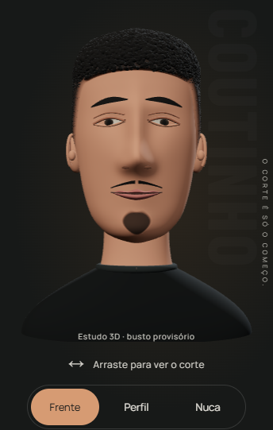
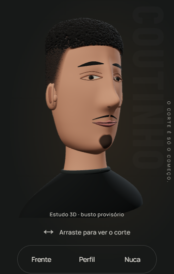
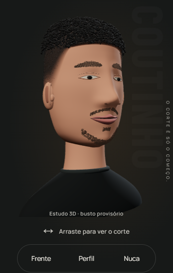
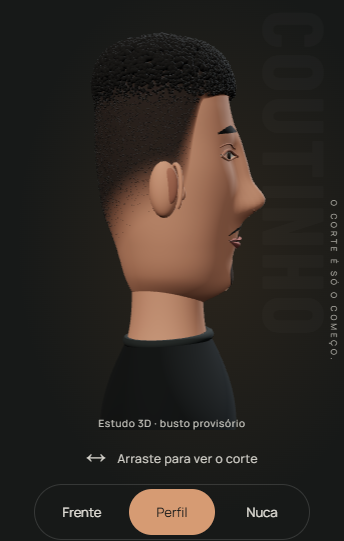
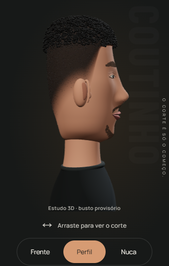
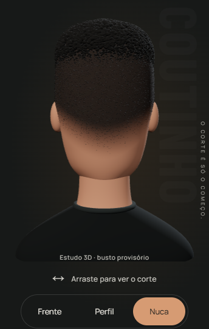
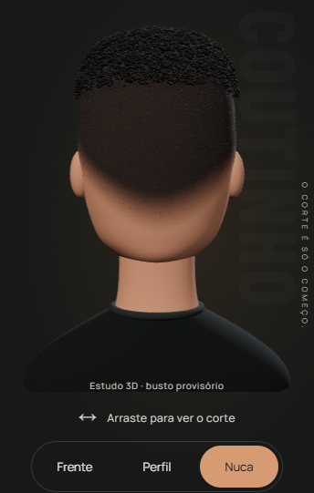

Capturas reais do site em viewport de 390 × 844 px. Mesma câmera, distância, campo de visão, luzes, exposição, posição da vitrine e ângulos. Frente: 0°; três quartos: 37,8°; perfil: 90°; nuca: 180°. A geometria mudou; o enquadramento não foi alterado para favorecer o depois.
Resultado provisório. O estudo aproxima proporções e distribuição dos pelos, mas não substitui uma escultura com semelhança aprovada.

Rosto mais largo e região inferior menos alongada. Lábios com mais volume; bigode e cavanhaque feitos com fios. A posição dos olhos foi ajustada à nova largura. O desenho fino do nariz e das pálpebras ainda é simplificado.


Mandíbula mais ampla e nariz menos estreito. Os detalhes agora seguem o mesmo deslocamento da malha da face. A profundidade lateral foi interpretada: a foto original não fornece um três quartos equivalente.


Topo com pequenos agrupamentos de cachos. Degradê concentrado na têmpora e em torno da orelha. A referência adicional orienta o corte, não a identidade do perfil. O topo curto foi mantido, sem copiar o volume posterior maior da referência.


A transição desce na nuca e o topo ganhou textura. Não há fotografia direta da nuca do Coutinho: contorno, projeção occipital e simetria são interpretações. O corte ainda precisa de fios e textura de produção no GLB final.
A foto frontal original do Coutinho, exibida na conversa anterior, orienta identidade, sobrancelhas, olhos, nariz, boca, bigode, cavanhaque e camiseta preta. O arquivo dessa foto não está mais em referencias/. A imagem atual referencias/image.png orienta cachos, linha frontal e transição lateral; sua barba cheia não foi transferida para o Coutinho. Nenhuma imagem adicional de estilo 3D ou iluminação está disponível.
Falta public/models/coutinho.glb: escultura adulta estilizada do Coutinho com topologia facial contínua, pálpebras e narinas modeladas, assimetrias da identidade, bigode fino, cavanhaque, afro curto e degradê nas têmporas/orelhas/nuca, pescoço e camiseta preta. Deve ser validada em frente, três quartos, perfil e nuca. A vitrine já recebe esse asset por modelUrl, com escala, orientação e enquadramento configuráveis.